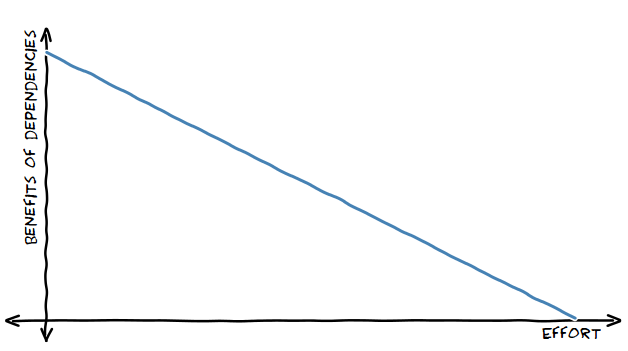

One of the most pervasive debates in software engineering is whether dependencies are good or bad for projects. Does it make sense to implement all, or nearly all the functionality of a project on your own, or is it better to use the plethora of libraries available for many sub-tasks the project needs to perform.
The modern domain of web development places both sides of this debate in the spotlight. On one hand, it's easy to develop fairly complex web sites and applications with small teams, due to the large number of supporting libraries and frameworks available. On the other hand, this very multitude of libraries and frameworks is a problem in itself. It manifests in many ways - from the leftpad fiasco to the steep learning curve of modern web development today, where it seems that new frameworks are developed and old ones fall out of favor faster than the time it takes to learn them.
If you follow programming news, this debate is everywhere. Documentation pages like Writing Web Applications (using only the Go standard library) spark heated debates; on one side, defenders of the "no-dependencies" approach extol the virtues of clear, focused dependency-less code and its ease of maintenance and deployment. On the other side, many programmers claim that it's foolish to "reinvent the wheel", giving up on the many insights and hard-won truths absorbed and put to good use by library writers. The formerly derogatory, but now more accepted term NIH (Not Invented Here syndrome) is also used quite a bit.
I want to propose a simple formula that should help defuse many such debates, because in my opinion both sides are right - depending on the situation:
The benefit of dependencies is inversely proportional to the amount of effort spent on a software project.
That's it. The more effort is spent on a project in terms of engineer-years, the less benefit dependencies have. For short, low-effort projects dependencies are hugely beneficial. For long, multi-person multi-year projects, not so much. In fact, for such longer-term projects the costs of dependencies begin to outweigh their benefits.
This observation is based on a long career developing software, managing software developers, and carefully observing the world of software development.
Take web development as an example. If you're a contractor that churns out web apps for customers every 2-3 weeks, it's almost certain your projects use libraries and frameworks. It saves so much time and effort, so why not?
However, if your company has a large and complex web app that 4 engineers have been hacking on for a couple of years (and will keep hacking on in the foreseeable future), it's likely that you only use the most foundational libraries (say, jQuery), and the rest is developed in-house.
The distinction between foundational and other libraries is a continuum; it's again a matter of scale. Few companies will reinvent a database for their project, yet if you're operating on Google's scale it can actually make sense.
What's interesting about this is that a single project can go through different points on this dependency vs. effort curve throughout its lifetime. Many projects start small and simple, and rely on external dependencies for the heavy lifting. However, as time goes by and more effort is sunk into the project, almost inevitably the dependencies get replaced by in-house alternatives. This happens most often when the off-the-shelf dependency no longer covers all the use cases the project needs. Other reasons include faster development pace; to update a dependency, a team needs to contribute upstream and wait for the changes to be accepted and integrated. Not all teams like to wait.
A good example is 3D game developers. Almost invariably, small studios and developers start by using one of the existing game engines and focus on their game's unique content. With time, however, more and more big studios move to develop their own engines to cater for their unique needs. The effort spent on the project is now large, so dependencies are less beneficial.
One of the best articles on this subject I'm aware of is Joel Spolsky's In Defense of Not-Invented-Here Syndrome (from 2001). In that article Joel tells how the Microsoft Excel team strove to eliminate all dependencies in their project, including having their own C compiler at some point. They didn't do it because they were stupid or conceited - they did it because it made sense for their gigantic project.
Joel's point is slightly different from mine - he says that core functionalities are best developed in-house. This is true, but my formula tries to capture the picture from a different angle. When your project is starting, the web framework you use is not a core functionality - it's just a tool. With time, however, it makes more sense to treat it as core functionality, since so much effort was already spent on the project; the cost of extra effort to eliminate the dependency is diminished.